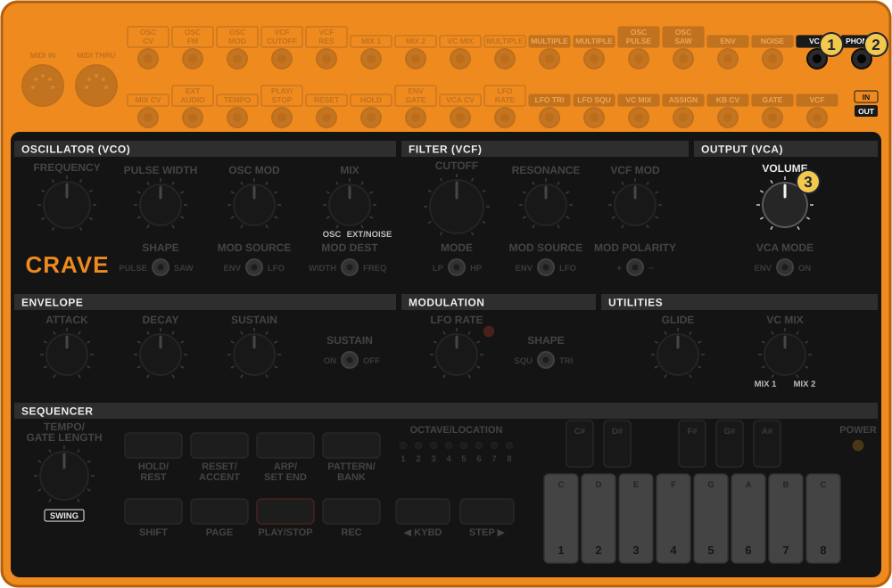
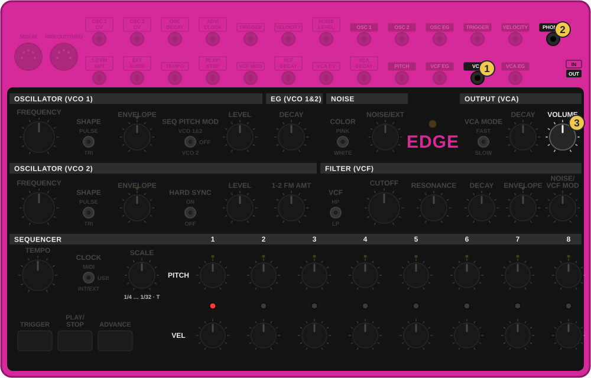
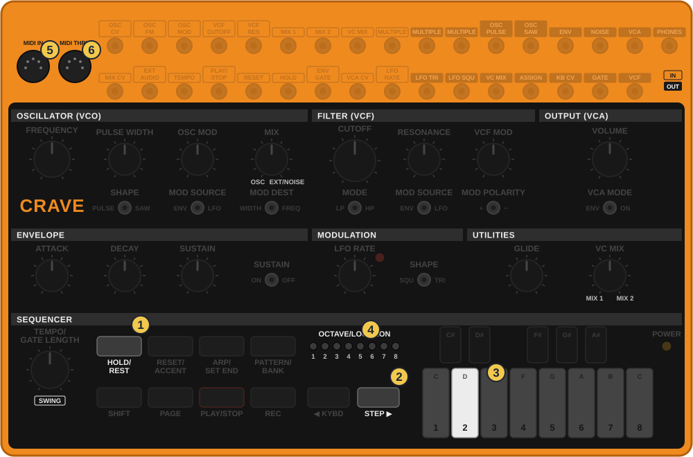
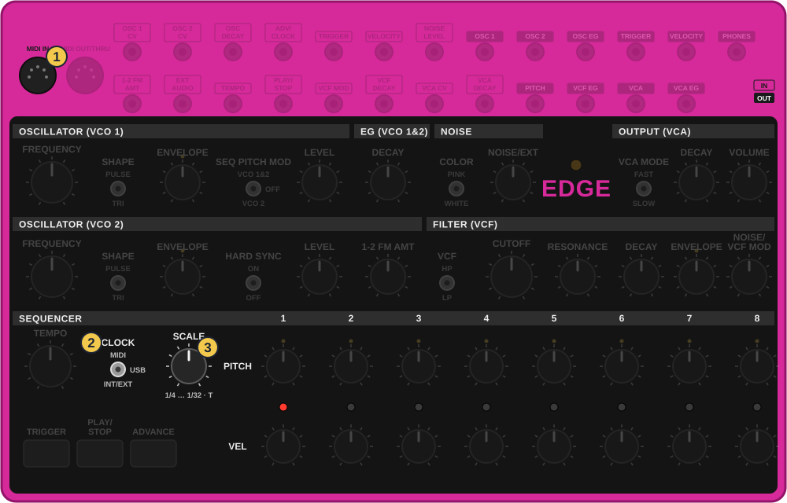
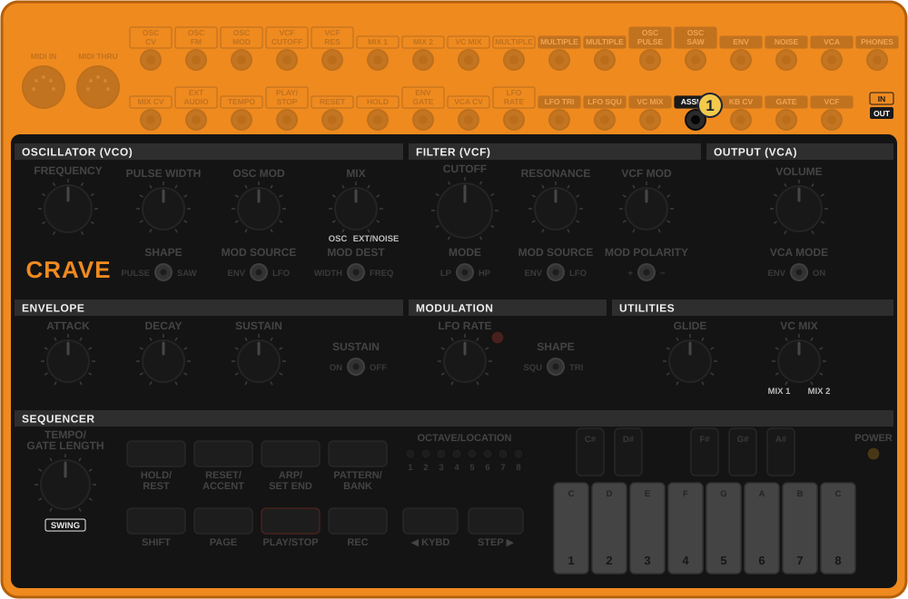
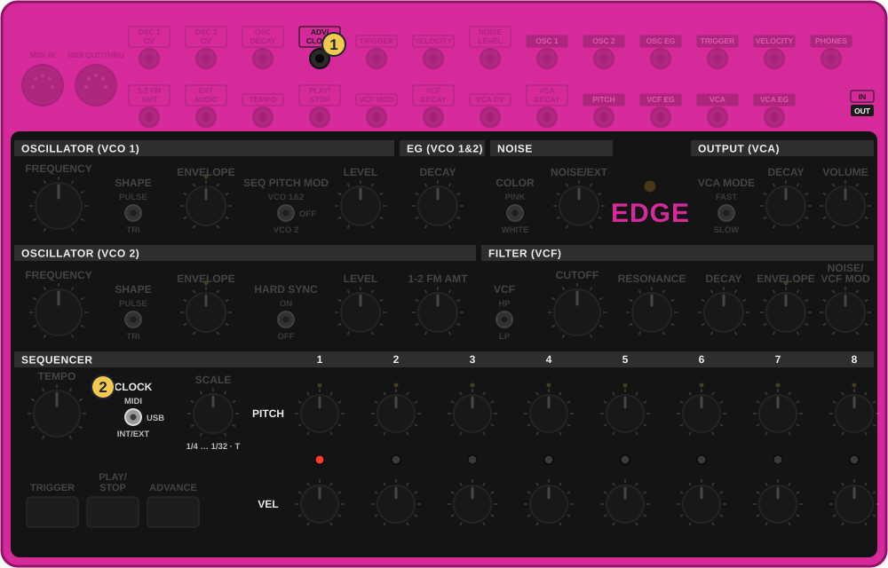
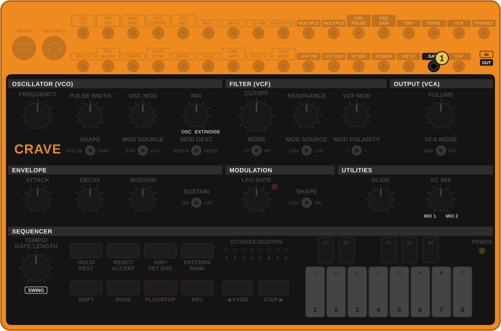
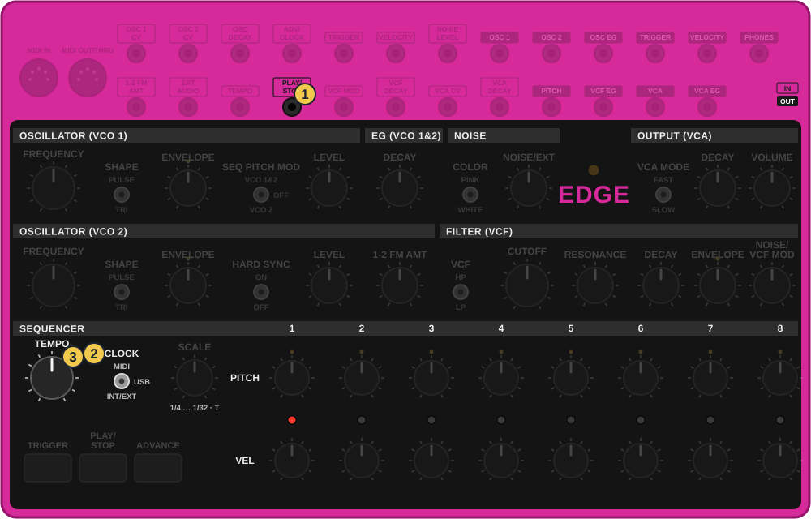

איך לקרוא כל כרטיס
- מתחילים כש: השורה הצהובה. לפני שנוגעים, מוודאים שהמכשירים במצב הזה.
- איזה מכשיר: כל צעד מתחיל בתגית: טי־8, קרייב או אדג׳.
- הסימנים: ✋החזק לוחצים ולא עוזבים. 👆לחץ לחיצה קצרה. ⟳סובב מסובבים כפתור. 🖐שחרר עוזבים הכל.
איך כל אחד נכנס למיקסר, איך הטי־8 נותן קצב לשניהם דרך כבלי מידי, ואיך כבלים קטנים בין הקרייב לאדג׳ גורמים להם להקשיב אחד לשני.
הכל כאן לפי המדריכים הרשמיים. מה שהמדריך לא אומר מסומן ״🔍 לבדוק״. כשתבדוק על המכשירים, ספר לי מה ראית, ואתקן.


הכתום הוא הקרייב, הוורוד הוא האדג׳
אפשר לגעת בתמונה כדי להגדיל.
| מכשיר | שקע | כבל | במיקסר |
|---|---|---|---|
| קרייב | VCA/LINE | מונו: 3.5 מ״מ אל 6.3 מ״מ | ערוץ 1, כניסת ליין |
| אדג׳ | VCA | מונו: 3.5 מ״מ אל 6.3 מ״מ | ערוץ 2, כניסת ליין |
| טי־8 | MIX OUT | סטריאו: 3.5 מ״מ אל שני 6.3 מ״מ | ערוץ סטריאו ראשון, עם וולקה אחת ב־MIX IN שלו |
| וולקה | PHONES | כמו של הטי־8: 3.5 מ״מ אל שני 6.3 מ״מ | ערוץ סטריאו שני |
בטי־8 ובוולקות שקע אחד משמש גם לאוזניות וגם למיקסר. בקרייב ובאדג׳ אלה שני שקעים נפרדים: PHONES לאוזניות, ו־VCA/LINE או VCA למיקסר. VOLUME שולט על שניהם. גם PHONES יעבוד במיקסר, אבל השקע הראשי בנוי בדיוק לכניסת ליין.
ככה ארבעה מקורות ממלאים את ארבעת הערוצים: הקרייב, האדג׳, הטי־8 עם וולקה אחת, והוולקה השנייה.
הטי־8 הוא המנצח. דרך כבל מידי הוא שולח שלושה דברים: שעון (כמה מהר), התחלה ועצירה. הקרייב מקבל אותם, ומעביר עותק לאדג׳ בשקע MIDI THRU. ככה מספיקה שרשרת אחת.
BMIDI-2-35 (60 ס״מ), אל קרייב MIDI IN.בטי־8 זה מיני־ג׳ק, ליד MIDI IN שנראה אותו דבר: צריך את OUT. בקרייב שקע עגול גדול, השמאלי.Bespeco CM150), אל אדג׳ MIDI IN.במיני־ג׳ק של מידי יש שתי שיטות חיווט, A ו־B. הטי־8 והכבל של בוס הם בשיטה A, ולכן כבל אחר לא בהכרח היה עובד. בתקע העגול יש רק חיווט אחד.

תרשים מצויר לפי צילום של הקרייב והמדריך הרשמי, לא צילום
אפשר לגעת בתמונה כדי להגדיל.
| בעמוד 3 | השעון בא מ־ |
|---|---|
| 1 | הקרייב עצמו |
| 2 | מידי, השקע העגול |
| 3 | מידי ב־USB |
| 4 | פולסים בכבל קטן |
| 5 | אוטומטי |
באוטומטי (5) הקרייב בוחר לבד: כבל קטן, אחר כך USB, אחר כך השקע העגול, ואחרון השעון שלו. גם זה יעבוד, אבל 2 ברור יותר. כדי לנגן את הקרייב לבד בקצב שלו, מחזירים ל־1.

תרשים מצויר לפי צילום של האדג׳ והמדריך הרשמי, לא צילום
אפשר לגעת בתמונה כדי להגדיל.
ב־1/16 שמונת הצעדים של האדג׳ חוזרים פעמיים בכל תיבה של הטי־8. ב־1/8 הם נמתחים על תיבה שלמה. המספרים עם T הם שלישונים, לגרוב מתגלגל.
🔍 לבדוק: האם הקרייב והאדג׳ מתחילים לבד מהלחיצה בטי־8, או שצריך ללחוץ קודם PLAY/STOP בכל אחד. והאם האדג׳ חוזר לצעד 1 לבד בהתחלה. ספר לי מה קרה.
מידי שולח גם תווים, לא רק קצב. לפי המדריך של הטי־8, הבס שלו יוצא בערוץ 2 והתופים בערוץ 10.
🔍 לבדוק: באיזה ערוץ הם מגיעים מהמפעל. ספר לי מה מצב המתגים.
המידי נותן לשניהם אותו קצב. כבלים קטנים בין השקעים נותנים יותר: התופים מזיזים את הבס, והבס מזיז את התופים. אותם כבלים קצרים, 3.5 מ״מ מונו, ואותו כלל: מיציאה לכניסה.
כניסת TRIGGER מכה בלי להתקדם צעד, בעוצמה של הצעד שבו האדג׳ עומד. רוצה מכה אחרת? ADVANCE לצעד אחר.
כשהטי־8 לא בג׳אם, אין צורך במידי. כבל קטן אחד בין לוחות השקעים מספיק: הקרייב נותן את הקצב, והאדג׳ הולך אחריו. מידי עדיין עדיף כשהטי־8 בפנים, כי רק הוא מעביר גם ״התחלה״ ו״עצירה״.


הכתום הוא הקרייב, הוורוד הוא האדג׳
אפשר לגעת בתמונה כדי להגדיל.
🔍 לבדוק: אם צעד 1 של האדג׳ לא נוחת על התו הראשון של הקרייב, לוחצים ADVANCE באדג׳ תוך כדי נגינה עד שהם מתיישרים. ואם האדג׳ מתקדם מהר מדי או לא אחיד, עוצרים את הסיקוונסר שלו ב־PLAY/STOP, כדי שרק הכבל יקדם אותו.
טריק: בעמוד 2, ערך 3 במקום 2 שולח דפיקה כל שני צעדים. האדג׳ מנגן בחצי מהירות, מתחת לקו של הקרייב.


הכתום הוא הקרייב, הוורוד הוא האדג׳
אפשר לגעת בתמונה כדי להגדיל.
מה זה: החיבור מהסרטון של בהרינגר. הקרייב אומר לאדג׳ מתי לנגן ומתי לעצור: כשהקרייב מנגן תו, הסיקוונסר של האדג׳ רץ. בשקטים של הקרייב, הוא נעצר.
🔍 לבדוק: האם האדג׳ רץ כל זמן שהתו של הקרייב מחזיק, או שכל תו מדליק ומכבה אותו לסירוגין. בצילום מהסרטון היד מסתירה את השקע בקרייב, אבל לפי המיקום זה GATE.
זה לא סנכרון של קצב. המהירות של האדג׳ עדיין שלו, מ־TEMPO, ולכן הצעדים לא נעולים על הקרייב. זה טריק לגיוון. לקצב יציב של טכנו, 4.1.